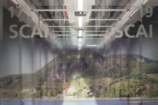

2. Introduction to full waveform modeling¶
2.1 Why full waveform?¶
Much of the modern seismological methods used today rely on very little of the information contained within the seismogram. Earthquakes can be located using just the arrival time of the P- and S- waves, and this same information from many earthquakes in a given area can be used to invert for a travel time tomography. These methods however neglect the vast majority of the data within the waveform.
The seismic waveforms recorded from an earthquake principally depend upon the seismic structure of the medium they pass through (i.e. the Earth), and the characteristics of the earthquake source itself. If this waveform data is utilized, it could therefore lead to a much greater resolution of seismic properties (e.g. velocity and attenuation) of the Earth, as well as better models of earthquakes’ sources and ground motion from potentially hazardous earthquakes.
2.2 Calculating the wave field¶
In order to use the full waveform to constrain a seismic wave speed model of the Earth, we need a way of calculating the response of the 3D velocity models we already have. The physics of how a seismic wave propagates through the earth is well understood, and is described by the wave equation.
A number of different methods exist to solve the wave equation (or its constituent equations) in order to model the propagation of a waveform from its source through a velocity model to a receiver. In order to do this, the modelled area is broken up into a grid of points with given seismic properties, and the motion of each point in that grid is calculated at each time step.
The spacing of these points is controlled by the velocity model used and the frequency of the seismic wave that is modelled, with tighter grid spacing and a smaller time step being required to model higher frequency seismic waves.
The time step and grid spacing are also dependent on the method used to solve the wave propagation. The codes supported within the VERCE platform use the spectral element methods (Komatitsch et al., 2005) to solve the seismic wave equation, hence calculating the response of the seismic wave-field to the velocity and attenuation parameters of the input model. Details on how to ensure that the model is stable to the frequencies required are given in section 8 of this guide.
2.3 High performance computing in seismic waveform modeling¶
The main problem/issue with this sort of simulation is that calculating the motion of a tight grid of points at thousands of time steps is extremely computationally expensive. For this reason, both 2D and 3D waveform models are run on high performance computers. These simulations are executed in parallel, meaning that the simulation runs simultaneously on many different processing cores. Simulations performed through the VERCE platform can be run on a range of different super computers from across Europe. The supercomputer pictured in figure 2.1 is hosted at SCAI Fraunhofer, Germany.

Figure 2.1: One of the high performance computers which is available through the VERCE platform is hosted at SCAI Fraunhofer, Germany (https://www.scai.fraunhofer.de).
2.4 What do I need to run a simulation?¶
In order to run a full waveform seismic simulation you need to know the following details:
Velocity model
In order to calculate the wave-field you need to know the velocity structure of the area of interest. The velocity models already available through the portal are all based on published travel time tomography models, but it is also possible to load your own wave speed models into the portal (see section 8).
Mesh
The mesh is a grid of points within the volume that is to be modelled. The mesh takes into account the changes in required resolution with depth, but also the topography and bathymetry of the area being modelled. Several meshes are already loaded into the portal for specific regions. However, if you wish to run simulations in a new area, you will need to create and submit a new mesh and velocity model. Details of how to do this are given in section 8 of this guide.
- Focal mechanisms
For any earthquake you want to model you must know the hypocentral location as well as the full focal mechanism. The VERCE portal allows you to download focal mechanisms from the gCMT catalogue and other local earthquake mechanism catalogues (e.g. INGV catalogue of TDMT solutions), but it is also possible to load in your own focal mechanisms as described in section 8.
- Station locations
Again, using the portal, users can select station locations by accessing the information on international seismic networks through FDSN web services. However, if there are any networks or station locations that are not pre-loaded to the portal, you can also add your own station locations (section 8).
All of these are provided for certain study areas, such as the area we consider in the simple example in part 5 of this guide.
However, If you are working on a study area that is not currently supported in the VERCE portal, you will also need to create a new mesh, velocity model, station locations and possible earthquake focal mechanisms (although there are global catalogues supported in the platform) and you can use them for bespoke simulations.